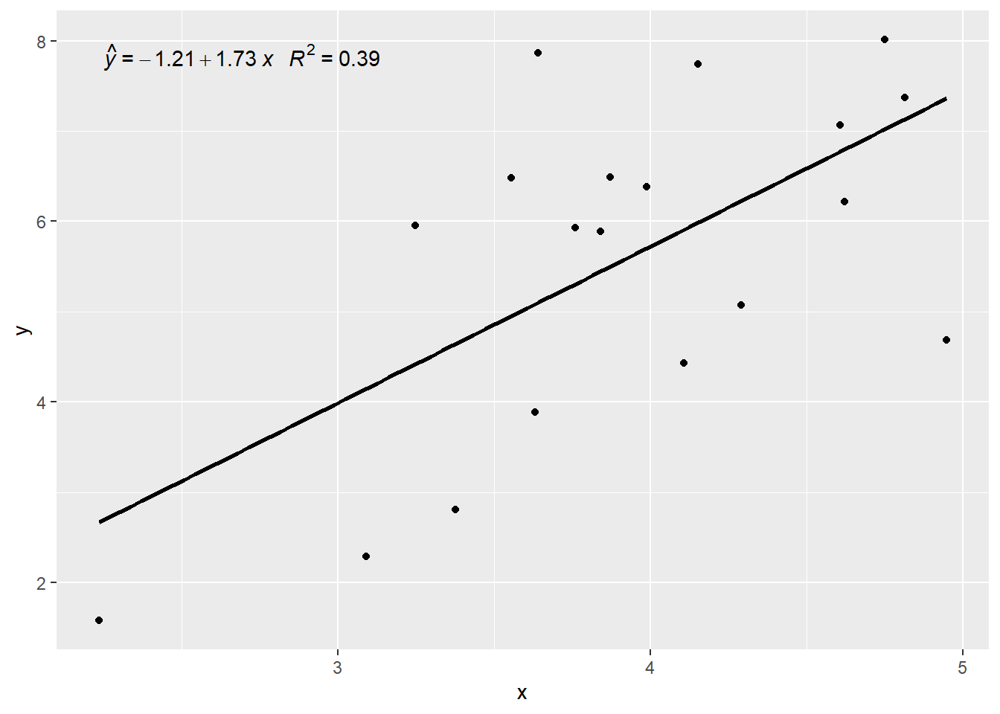

2 Regresi Linier Sederhana
Bab ini akan membahas regresi linier sederhana. Istilah regresi sederhana tidak merujuk pada kenaifan penelitiannya tetapi merujuk pada model yang hanya terdiri dari satu variabel respons dan satu variabel prediktor.
Situasi ini sering terjadi pada penelitian sains. Misalnya seorang peneliti ingin memprediksi laju reaksi kimia karena perubahan temperatur, atau ingin mengetahui hubungan antara perubahan diet dengan tingkat kolesterol pada seseorang. Jika dapat diasumsikan bahwa variabel-variabel ini terhubung secara linier, kita dapat menggunakan regresi linier sederhana untuk mengkuantifikasi hubungan ini.
Analisis regresi digunakan ketika solusi eksak tidak tersedia, dalam arti kita tidak akan dapat menemukan nilai tunggal yang dapat mencakup secara lengkap hubungan antara variabel respons dengan prediktornya. Sehingga disini kita mencoba memprediksi setepat mungkin variabel respons atau memprediksi dengan kesalahan terkecil.
Untuk mencapai tujuan ini, kita menganalisis pola-pola variabilitas pada variabel respons dan mencoba melihat apakah variabilitas ini dapat diprediksi dari variabilitas prediktornya.
2.1 Model Regresi Linier Sederhana
Model regresi linier sederhana dapat dituliskan sebagai berikut:
\[y_i=\beta_0 + \beta_1x_i+ \epsilon_i,\]
Regresi sederhana mengindikasikan hanya ada satu variabel prediktor x untuk menduga variabel respons y. Linier disini diartikan modelnya linier pada parameternya dalam hal ini \(\beta_0\) dan \(\beta_1\). Jadi model \(y_i = \beta_0 + \beta_1{x_i}^2 + \epsilon_i\) adalah linier pada \(\beta_0\) dan \(\beta_1\), sementara model \(y_i = \beta_0 + e^{\beta_ix_i} + \epsilon_i\) tidak linier.
Misalkan kita memiliki pasangan-pasangan data sampel sebanyak n yang diambil secara acak dari populasi yang lebih besar \((x_1,y_1), (x_2,y_2), ⋯, (x_n,y_n)\). Tujuan dari analisis regresi linier adalah menemukan model terbaik yaitu menemukan nilai \(\beta_0\) and \(\beta_1\) yang menghasilkan garis paling cocok dengan titik-titik data yang kita punyai.
Dengan kata lain tujuan dari analisis regresi adalah mengestimasi koefisien regresi untuk variabel prediktor sehingga didapatkan nilai dugaan variabel respons sedekat mungkin nilainya dengan nilai pengamatan aktualnya.
Di dalam analisis regresi, model terbaik ditunjukkan oleh garis lurus yang menghubungkan rata-rata variabel prediktor dengan variabel respons sedemikian rupa sehingga jumlah kuadrat kesalahan antara titik-titik data pengamatan aktual \(y_i\) dengan nilai dugaannya \(\hat y_i\) minimal.
Untuk memperoleh nilai dugaan \(\beta_0\) dan \(\beta_1\) yang paling cocok, kita menggunakan metode kuadrat terkecil (method of least squares). Dengan pendekatan kuadrat terkecil, kita mencari nilai dugaan \(\beta_0\) dan \(\beta_1\) yang meminimalkan jumlah kuadrat residu \(y_i-\hat y_i\).
Kasus 1: Penjualan Motor dan Pertumbuhan Pendapatan Perkapita
Kita akan melanjutkan ilustrasi tentang hubungan antara penjualan motor dengan pendapatan pada Bab 1 sebelumnya. Data dapat diunduh di sini. Langkah awal untuk melihat hubungan antar variabel adalah membuat diagram pencar.
Plot sangat penting di dalam regresi. Pemeriksaan secara teliti diagram pencar harus mendahului penghitungan regresi. Diagram pencar dapat mengindikasikan model regresi yang diinginkan mungkin masuk akal atau tidak. Kesepakatan dalam membuat diagram pencar, variabel \(x\) sebagai variabel penjelas diplot pada sumbu horisontal. Varibel \(y\) sebagai variabel respons diplot pada sumbu vertikal.
Untuk membuat diagram pencar, hal pertama yang harus dilakukan adalah memasukkan data ke dalam R dan memanggil library yang relevan dengan model yang akan dibuat.
PJMotor <- read.delim("PJMotor.txt") # memanggil data dalam bentuk teks ke dalam R
PJMotor <- as.data.frame(PJMotor)head(PJMotor) # untuk melihat 6 data pertama## Tahun y x
## 1 2001 1.575822 2.235180
## 2 2002 2.287706 3.090636
## 3 2003 2.809896 3.376533
## 4 2004 3.887678 3.630909
## 5 2005 5.074186 4.289591
## 6 2006 4.428274 4.107514tail(PJMotor) # untuk melihat 6 data terakhir## Tahun y x
## 14 2014 7.867195 3.639072
## 15 2015 6.480155 3.555062
## 16 2016 5.931285 3.758837
## 17 2017 5.886103 3.841197
## 18 2018 6.383108 3.987825
## 19 2019 6.487460 3.871444Perintah plot(x,y) di dalam R adalah untuk membuat plot antara variabel respons dengan variabel prediktor. Hasilnya ditampilkan pada Gambar 2.1.
plot(x,y) #membuat diagram pencarDi dalam R model regresi linier sederhana dapat diperoleh dengan perintah lm(y~x). Tanda ~ dapat diartikan y dijelaskan oleh x. Fungsi ini mengestimasi koefisien regresi model linier dengan metode kuadrat terkecil (the least squares method).
Semisal modelnya kita beri nama model penjualan motor (mpm), yang memodelkan hubungan antara penjualan motor (y) dengan pertumbuhan pendapatan (x), maka model ini dapat diperoleh dengan perintah:
mpm <- lm(y ~ x) # perhatikan tanda panah ke kiri.
# Intersep dan kemiringan secara default sudah termasuk yang diestimasi.
# Bandingkan dengan perintah untuk mendapatkan diagram pencar. Perintah ini sama dengan persamaan dibawah (tanpa intersep, slope dan error):
\[ y = β_0 + β_1x + ε \]
Kita kemudian menggunakan perintah summary() atau untuk menampilkan luarannya. Hasilnya adalah sebagai berikut:
summary (mpm) # gunakan ekstraktor summary() untuk menampilkan hasil regresi##
## Call:
## lm(formula = y ~ x)
##
## Residuals:
## Min 1Q Median 3Q Max
## -2.6738 -1.1721 0.2916 0.9911 2.7707
##
## Coefficients:
## Estimate Std. Error t value Pr(>|t|)
## (Intercept) -1.210 2.088 -0.579 0.56999
## x 1.733 0.525 3.301 0.00422 **
## ---
## Signif. codes: 0 '***' 0.001 '**' 0.01 '*' 0.05 '.' 0.1 ' ' 1
##
## Residual standard error: 1.515 on 17 degrees of freedom
## Multiple R-squared: 0.3906, Adjusted R-squared: 0.3547
## F-statistic: 10.89 on 1 and 17 DF, p-value: 0.004224Hasil regresi menunjukkan dugaan koefisien regresi dan standar errornya. Intersep garis regresinya adalah \(\hat \beta_0\) = -1.210 (SE= 2.088), sementara dugaan kemiringan garisnya adalah \(\hat \beta_1\) = 1.733 (SE = 0.525). Sedangkan p-value untuk kemiringannya (menguji hipotesis nol bahwa \(\beta_1\) = true slope = 0) kecil, konsisten dengan bukti persebaran data yang cenderung linier. Tetapi p-value untuk intersep (menguji \(\beta_0\) = 0) adalah 0.57, berarti intersep tidak signifikan.
Diagram pencar dan garis regresi dapat ditampilkan bersama-sama dengan perintah berikut:
library(ggpmisc)
PJMotor <- as.data.frame(PJMotor)
my.formula <- y ~ x
p <- ggplot(data = PJMotor, aes(x = x, y = y)) +
geom_smooth(method = "lm", se=FALSE, color="black", formula = my.formula) +
stat_poly_eq(formula = my.formula,
eq.with.lhs = "italic(hat(y))~`=`~",
aes(label = paste(..eq.label.., ..rr.label.., sep = "~~~")),
parse = TRUE) +
geom_point()
p
…work in progress…